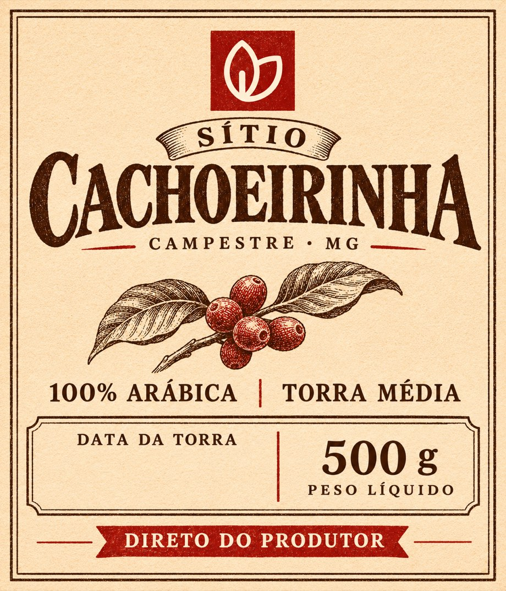
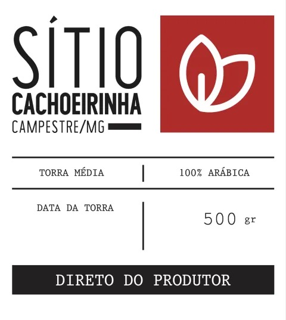
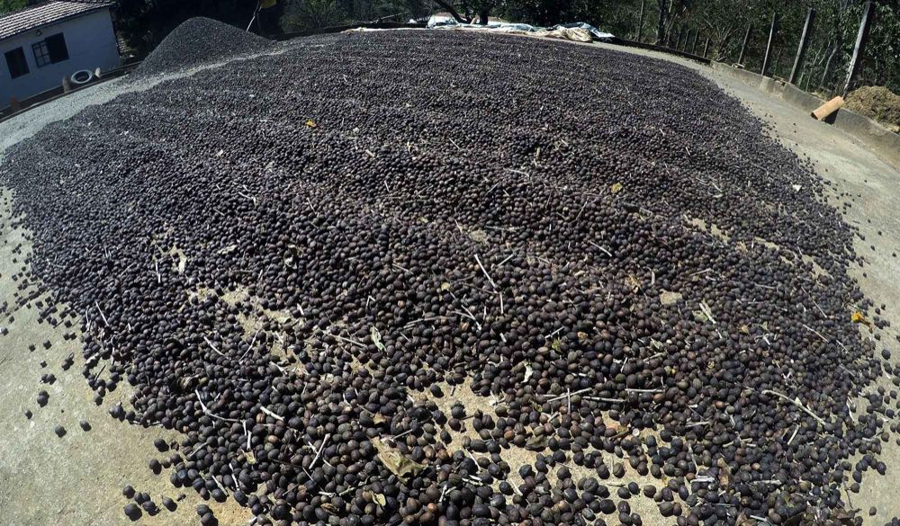
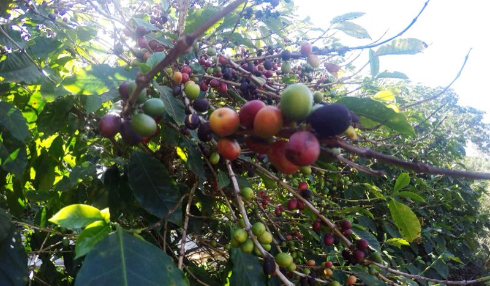
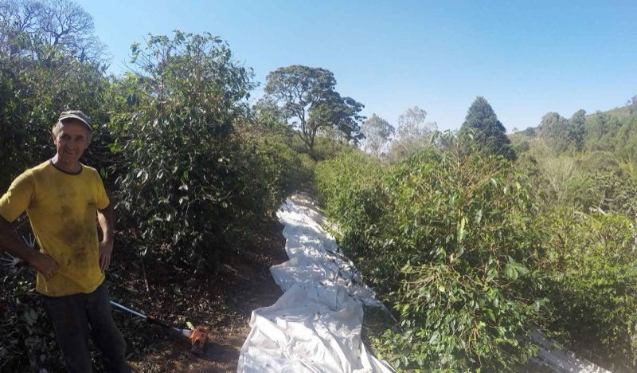

Sítio Cachoeirinha
O Sítio Cachoeirinha fica em Campestre, no Sul de Minas, a 1.180 metros de altitude. É de lá que vem o café que eu divido com os amigos.
Não é vendido ao público: não tem loja nem pedido, só o pacote de 500 g que chega na mão de quem é próximo.
- Origem
- Campestre, MG
- Altitude
- 1.180 m
- Espécie
- 100% arábica
- Variedades
- Catuaí e Icatu
- Torra
- Média


No sítio


